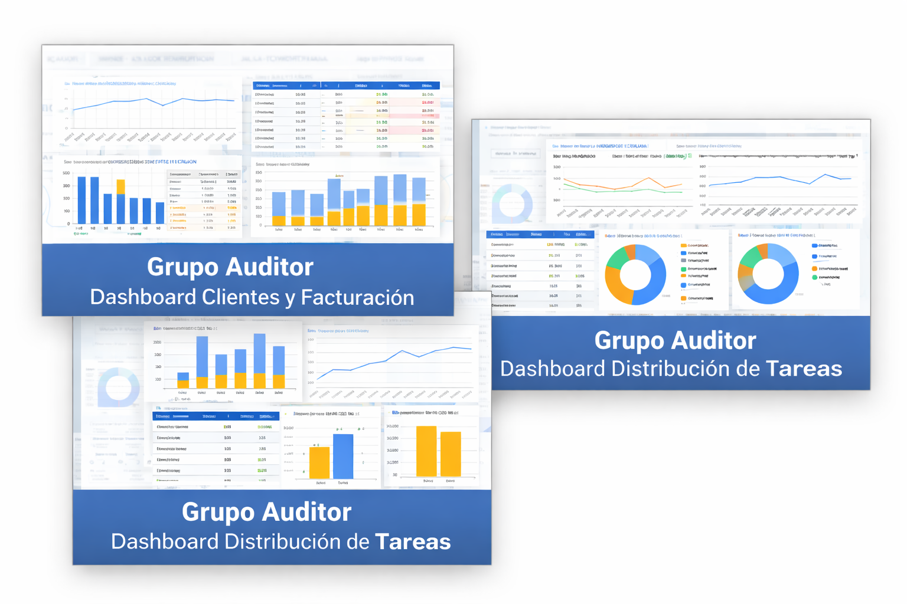
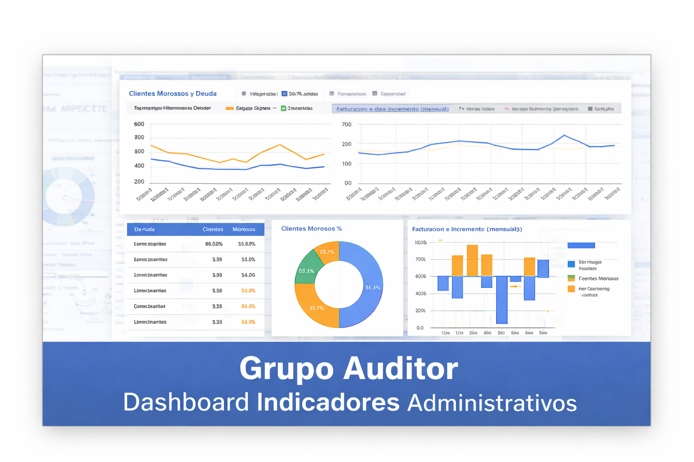

Dashboard Clientes y Facturación
Visualización de la evolución mensual de clientes, facturación total y ranking de clientes principales.
Portal de visualización de dashboards e indicadores de gestión del estudio contable.
Desde este panel se puede acceder a reportes de clientes, facturación, tareas operativas y métricas administrativas.
Visualización de la evolución mensual de clientes, facturación total y ranking de clientes principales.

Seguimiento de tareas por operario, cantidad de DDJJ mensuales y anuales y tiempo insumido por actividad.

Indicadores de morosidad, evolución de facturación, rentabilidad mensual y análisis de cartera de clientes.
Los dashboards permiten visualizar indicadores clave para la gestión del estudio contable y el seguimiento de la actividad de los clientes.
Variación de la cantidad total de clientes y evolución mensual de la cartera.
Análisis de facturación total mensual y ranking de los principales clientes.
Cantidad de tareas realizadas por operario y distribución del trabajo operativo.
Seguimiento de declaraciones juradas mensuales y anuales.
Porcentaje de cumplimiento de tareas y presentaciones mensuales.
Distribución de clientes por actividad, categoría y tipo societario.
Para consultas sobre el uso de los dashboards o acceso a nuevos reportes, comunicarse al 3535639877.